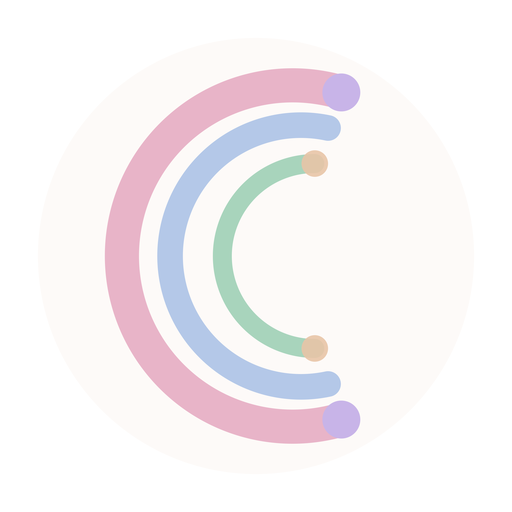
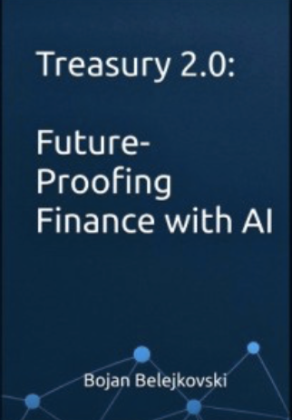

Node Zero is 378 finance tasks across 8 departments, built the way a treasurer or controller actually works, not a prompt library. Each one reads your real policies, covenant definitions, and chart of accounts before it does anything, so the output is built on your numbers and your rules.
Most AI in finance is a chatbot bolted onto the same broken process. You still gather the inputs, still remember the covenant math, still catch what is missing. Node Zero doesn't guess. If a number isn't in your context base, it says so instead of inventing one.
It is not a replacement for what you run today. It is a layer on top of it. It works against the systems and structure you already have, so it scales with you: add an entity, a covenant, a reporting line, and every task touching it inherits the update.
Already doing the work, not just reading about it.

Cuddlo Clothing Co.There is a lot of AI content aimed at finance right now. Almost none of it was written by anyone who has had to defend a number to a lender, a board, or an auditor. That is the whole difference here.
Over eighteen years in senior finance roles, built in rooms with leaders who came out of Tesla, thyssenkrupp, Ford, General Motors and Blue Cross Blue Shield. That is the standard these were written to. Every task exists because the work behind it landed on my desk first.
Built from the outputs a finance function genuinely produces. Close packages and provision workpapers. Budgets, reforecasts and long range plans. Pricing and margin analysis. M&A screening, valuation and diligence support. Board and strategy material. Cash and liquidity forecasting. Structured the way each one is really assembled.
Published accounting and tax standards, established treasury and FP&A practice, and hands on work across North America, Europe, Latin America and Asia, where the same close has to satisfy four sets of local expectations at once. Nothing proprietary sits in these files. No employer data, no client data, nothing confidential.
These are not skills an influencer posted last week after reading a changelog. Each one was written with the logic finance actually needs, which is why they read your rules before they run and stop when something is missing.
Nobody sells you a list this specific, because nobody has built it. This is a live slice of the library. Hover over it to hold it still.
This is the part that separates a finance agent from a chatbot. In treasury and accounting, being confidently wrong has consequences. A covenant computed from a textbook definition instead of your credit agreement can show a pass that is not there.
Covenant definitions captured clause by clause from your agreement. Approval thresholds. Investment policy limits. Your KPI builds, not generic ones. The task reads them as constraints, not as suggestions.
The prime directive of the whole system is that it never assumes an input. If a figure is not in your base, the task names it, tells you which file it belongs in, and points at the task that can produce it, rather than handing back a clean looking number nobody can trace.
Work products land in your workpapers and update the current state, so the next task starts from what the last one produced. Conflicts between files get surfaced rather than quietly resolved.
Debt service coverage was the one nobody wanted. The amortisation profile lived in a lender spreadsheet, the EBITDA build lived in someone's head, and the ratio got reassembled from scratch every quarter. Two analysts, three days, and a number that changed depending on who built it.
The amortisation schedule and the add-back caps were captured once, during the interview. Now both ratios compute from the same source in one pass, they agree with each other because they read the same figures, and the workpaper shows every input it used.
Break any recurring deliverable into the steps it actually takes. Most of them are assembly: pulling, matching, computing, formatting. A few are judgment. Node Zero takes the first kind and hands you the second, faster and with the work already shown.
Every dark block is a judgment call. That was always the real job. The rest was overhead you were carrying because nobody had taken it off you.
Most finance AI libraries stop at the tasks everyone already knows how to do. Node Zero doesn't. Digital assets are already a working branch here, not a slide for later: 14 tasks covering the full lifecycle, from first policy draft to incident response, built the same way as everything else in the library, reading your real rules instead of guessing at them.
Every task writes back, so the picture stays current instead of being rebuilt for the meeting. Three views a CFO actually asks for, and they tie to each other, because they read the same base.
Illustrative figures. Internally consistent, but not a real company.
378 tasks are worth very little if they have to guess at how you work. So Node Zero is not the tasks. Node Zero is the base underneath them, and building it is the first thing that happens. Five guided modules, 25 files, one field at a time, nothing invented on your behalf. Nothing is uploaded anywhere and nothing is shared. The answers become files that sit on your side, and you decide how much detail goes into them.
One field per turn, in plain language, in whatever order suits you. Where a field does not apply you mark it N/A deliberately, so a later task knows it was considered rather than skipped. Stop mid-way and pick it up next week; it resumes where you left off and shows you what's still open.
Every confirmed answer is written into the relevant context file as you go: your entities, chart of accounts, banking, facilities, policies, close calendar, current state. You can open any of them in a text editor and read exactly what it knows about you. No black box, and no database somewhere else holding it.
From that point the base is the thing that makes the library yours rather than generic. The test that it worked is not a score. It is this: a finance professional who has never seen your operation could read that folder and act correctly for you tomorrow.
No. The library is plain text. There is no software to install and nothing to lock you in. It runs wherever your AI can read a folder of files you hand it, which today means Claude, ChatGPT, Gemini or Copilot in the workspace tiers your company has already approved. Claude is what I build and test on, so that is the smoothest path, but the files are not tied to it.
That is governed by your contract with your AI provider, not by these files. On business, enterprise and API tiers the major providers exclude customer content from training. Anthropic's commercial terms say so explicitly, and OpenAI and Google draw the same line. On personal consumer plans it is a setting you control. Worth a five minute check with your IT team before you load anything real.
Nothing. There is no platform here, no account, and no server of mine anywhere in the path. You get files, they sit in your environment, and your numbers never leave it. That is a deliberate choice. A finance professional should not have to hand their numbers to a vendor to get value out of them.
Most people run the interview themselves, and it is built to be self serve. If you would rather not, I run it with you. A working session where I ask the questions and your base gets built properly the first time, by someone who has filled one of these in anger.
No tiers to decode and no feature grid. One library, one base, one set of guardrails, and a person on the other end of it.
No phased rollout. All 378 agents across 8 departments and 60 branches are active in your workspace as soon as you're in.
Built with you through a five module guided intake. Every agent reads it before it runs, which is what makes the output yours rather than generic.
Every agent reads the rules first, never assumes an input, and writes the result back. Data hygiene isn't a setting you turn on, it's how the base is built.
A live session on what's actually changing in treasury, tax, and finance AI, and how to use it. A working session, not a webinar funnel.
New agents added from continuous training on real engagements and real-life workflows, not a fixed catalog that stops growing the day you buy it.
Standards changes tracked, questions answered by a finance executive, not a support queue.

The execution playbook this whole library grew out of, written before any of it existed. It is built on the D.A.S.H. framework, and every member gets it in full.
A file library that never changes goes stale the first time a standard moves or your structure does. Here's the rhythm after day one.
The Network opens shortly. Until then you can hold a place in the founding group, or have me build and implement it with you directly.
The full library, the guided intake, the governance layer and monthly updates. Pricing is announced at launch.
For teams who want this handled end to end. I audit how your finance function actually runs today, then build the agents and dashboards directly into your own systems, on the same governance guardrails as everything else here.